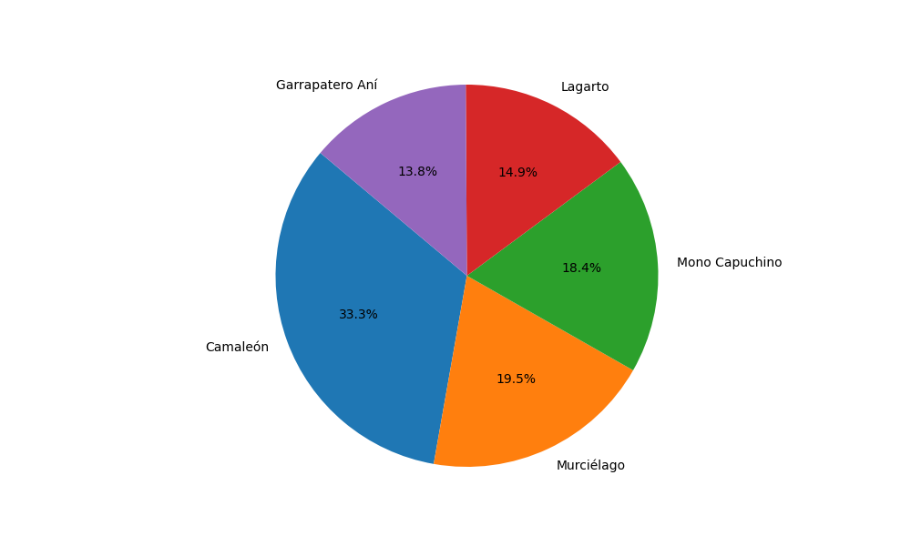

Datos
En éste apartado se podrá seleccionar un municipio, para de ésta manera mostrar una grafica sobre los 5 animales más incidentes según los datos recolectados.
{% if show == 1 %}Gráfica de los 5 Animales más Comunes en {{ municipio }}.

{% for animal, info in animal_info.items() %}
 {% endfor %}
{% endfor %}
Clase: {{ info.class }}
Familia: {{ info.family }}
Localidad: {{ info.locality }}
Hábitat: {{ info.habitat }}
Familia: {{ info.family }}
Localidad: {{ info.locality }}
Hábitat: {{ info.habitat }}